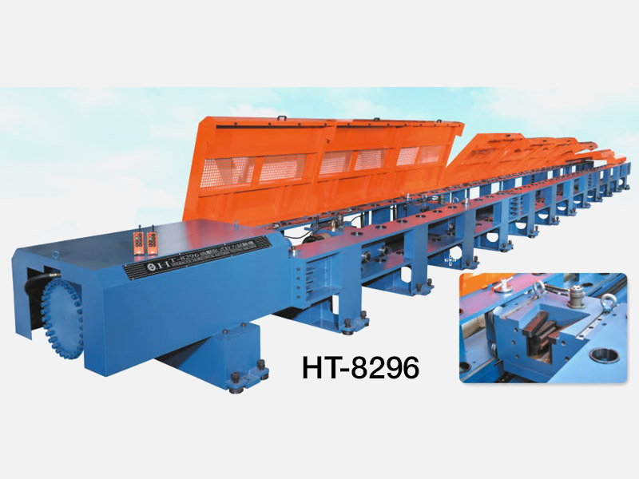
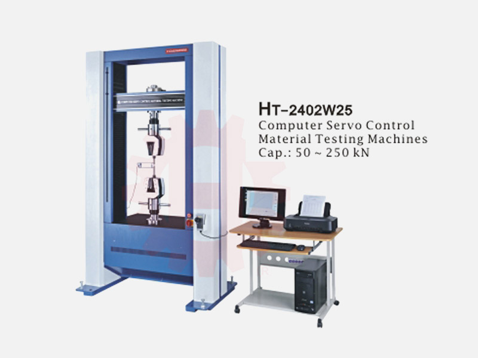

Hydraulic testing machine Malaysia
Hydraulic Testing Machines for High-Capacity QC
Electro-hydraulic universal testing machines for metal, construction material, copper and industrial component testing, with Malaysia sales and service support.
Buyer fit
Built for serious quality control decisions
Applications
Tensile testing, compression testing, bending, shear and high-capacity material verification.
Before Quotation
Prepare required capacity in kN, material type, sample size, test standard, fixture and extensometer needs.
Industries
Metal, copper, construction material, automotive, manufacturing and factory QA.
Recommended systems
Related Hung Ta models

HT-9501
Electro-hydraulic servo universal testing machine, 300 to 4,000 kN.

HT-2101
Electro-hydraulic servo universal testing machine for metals and industrial materials.
HT-8296
Horizontal universal testing machine for wire ropes, chains and long specimens.